Fase 0 da inauguração: cinco posts de 26 a 30 de novembro para a Net do Bem existir no Instagram e no Facebook. Um CTA só na semana inteira: siga e compartilhe.
5 posts4 prontos1 com pendênciaInstagram + Facebook
Calendário sugerido
Terça e quinta às 18h, sábado às 11h. Datas da Fase 0 seguem o Briefing V2.
Arraste as imagens, copie a legenda de cada rede e aprove ou peça ajuste. Post com pendência só vai ao ar depois que ela for resolvida.
Post 01 · Quinta-feira, 26/11 · 17h, antes do evento
Hoje é dia de inaugurar
Fase 0 · InauguraçãoPronto Arte limpa (versão com foto opcional) · 2 imagens
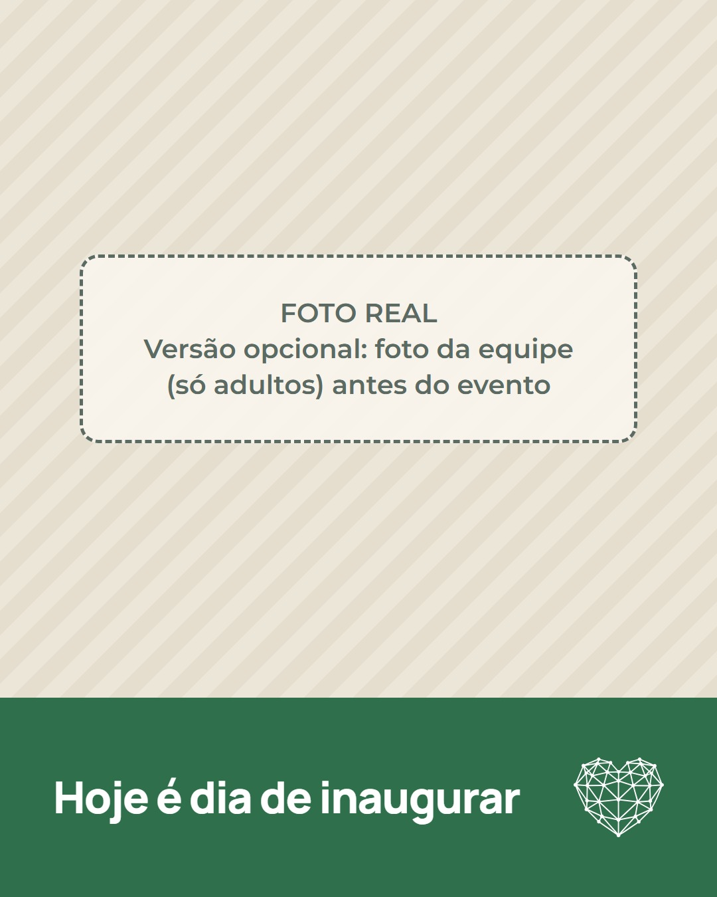
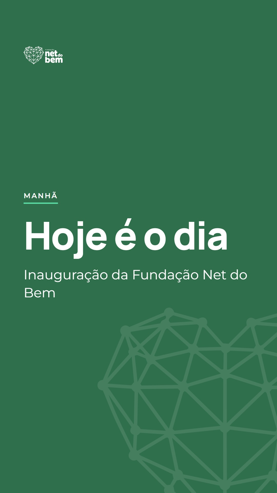
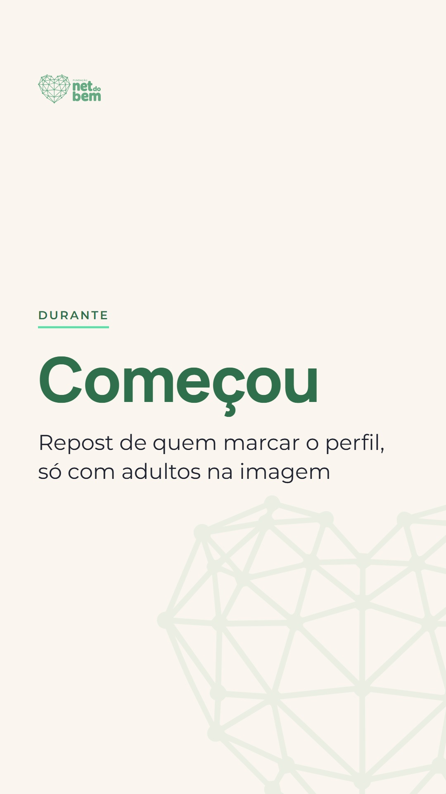
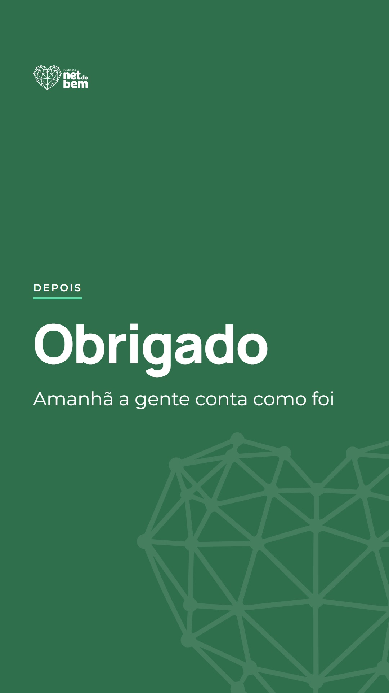
1/5
Observação
Opcional: se a equipe tirar uma foto antes das 17h, trocar a arte pela versão com foto e faixa verde (slide 2 desta peça mostra o layout).
PautaP0.1 · Inauguramos hoje
CTA únicoSiga e compartilhe
PúblicoTodos os públicos
ObjetivoExistir. Avisar que a fundação foi inaugurada e que o perfil começa hoje.
Stories do dia (últimas imagens do carrossel)
Manhã: Hoje é o dia. Inauguração da Fundação Net do Bem
Durante: Começou. Repost de quem marcar o perfil, só com adultos na imagem
Depois: Obrigado. Amanhã a gente conta como foi
Hoje é dia de inaugurar.
A Fundação Net do Bem é inaugurada hoje, em Sorocaba, num encontro com convidados. Nosso trabalho é apoiar as casas de acolhimento e as pessoas que cuidam nelas: educadores, equipes técnicas, gestores e voluntários. A partir de agora, você acompanha esse trabalho por aqui.
Siga e compartilhe.
#FundacaoNetDoBem #Sorocaba #Acolhimento #QuemCuidaDeQuemCuida
Hoje é dia de inaugurar.
A Fundação Net do Bem é inaugurada hoje, em Sorocaba, num encontro com convidados. Nosso trabalho é apoiar as casas de acolhimento de crianças e adolescentes e as pessoas que cuidam nelas: educadores, equipes técnicas, gestores e voluntários.
Esta página vai mostrar esse trabalho de perto, sem expor nenhuma criança.
Siga a página e compartilhe.
Arte em fundo creme com o logo da Fundação Net do Bem, um coração desenhado com linhas e pontos, e a frase Hoje é dia de inaugurar. Abaixo, a data 26 de novembro de 2026 e a cidade, Sorocaba.
1 ideia · 1 CTA · gancho até 6 palavras · sem criança identificável · sem endereço ou rotina · sem cópia de perfil de referência · sem Imposto de Renda · rosto de adulto só com autorização · legenda revisada por 1 pessoa da fundação.
Post 02 · Sexta-feira, 27/11 · 18h
Fortalecer quem cuida também é proteger a infância
Fase 0 · InauguraçãoPronto Card de posicionamento · 1 imagem
1/1
PautaP0.2 · Frase-mãe
CTA únicoSiga e compartilhe
PúblicoTodos os públicos
ObjetivoFixar a frase-mãe no primeiro dia depois da inauguração.
Fortalecer quem cuida também é proteger a infância.
Escolhemos essa frase para explicar a Net do Bem. Uma casa de acolhimento funciona porque tem gente cuidando todos os dias. Quando essa equipe tem formação, estrutura e apoio, crianças e adolescentes recebem um cuidado melhor.
Siga e compartilhe.
#FundacaoNetDoBem #Sorocaba #Acolhimento #QuemCuidaDeQuemCuida
Fortalecer quem cuida também é proteger a infância.
Escolhemos essa frase para explicar a Fundação Net do Bem. Uma casa de acolhimento funciona porque tem gente cuidando todos os dias: educadores, equipe técnica, coordenação e voluntários. Quando essa equipe tem formação, estrutura e apoio, crianças e adolescentes recebem um cuidado melhor.
Siga a página e compartilhe.
Card verde profundo com a frase em branco: Fortalecer quem cuida também é proteger a infância. Logo pequeno da Fundação Net do Bem abaixo.
1 ideia · 1 CTA · gancho até 6 palavras · sem criança identificável · sem endereço ou rotina · sem cópia de perfil de referência · sem Imposto de Renda · rosto de adulto só com autorização · legenda revisada por 1 pessoa da fundação.
Post 03 · Sábado, 28/11 · 11h
Os bastidores da inauguração
Fase 0 · InauguraçãoPendência Carrossel de fotos reais com faixa · 5 imagens
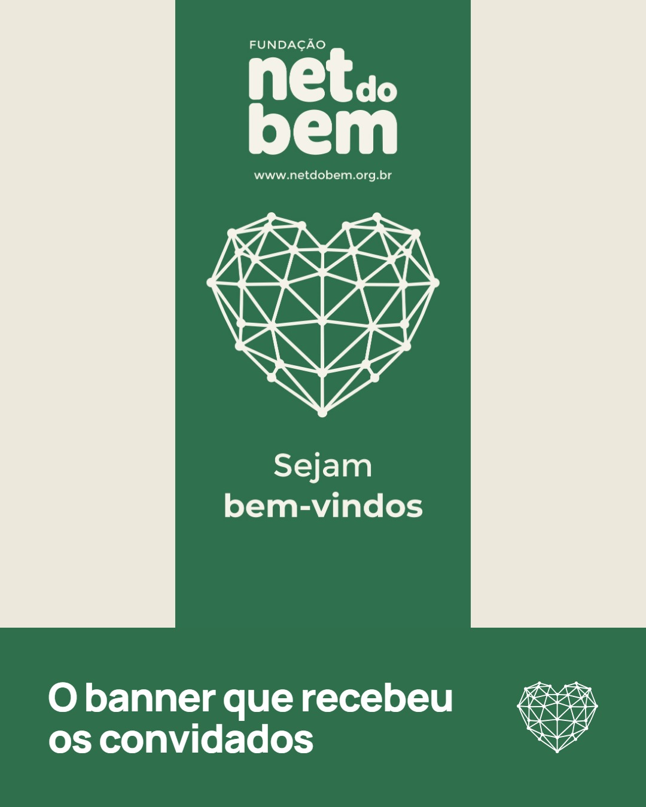
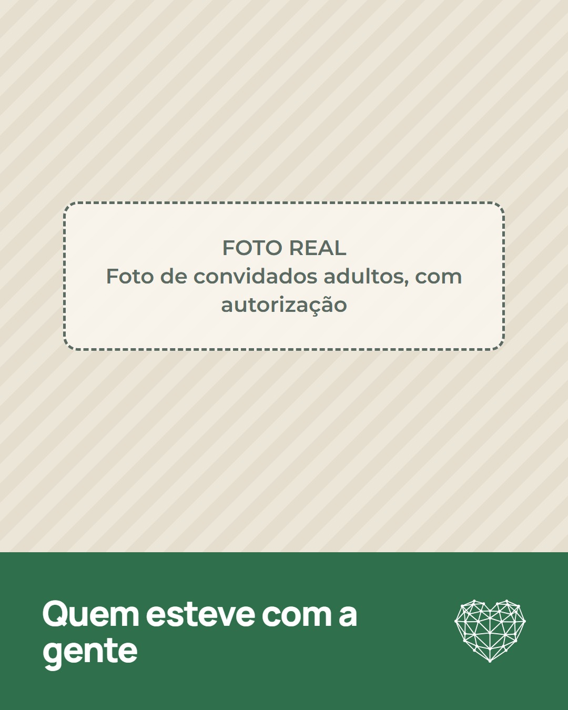
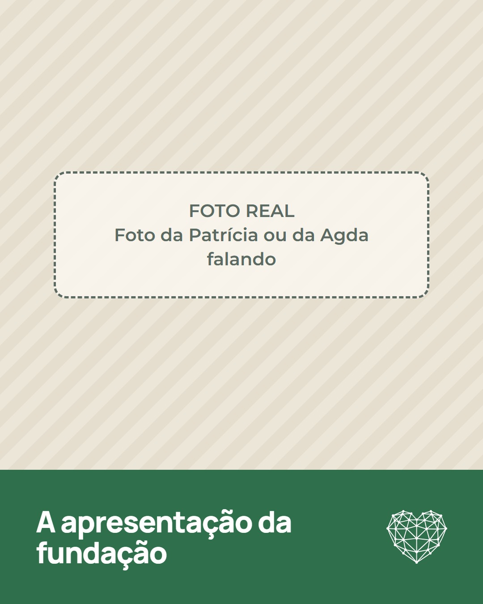
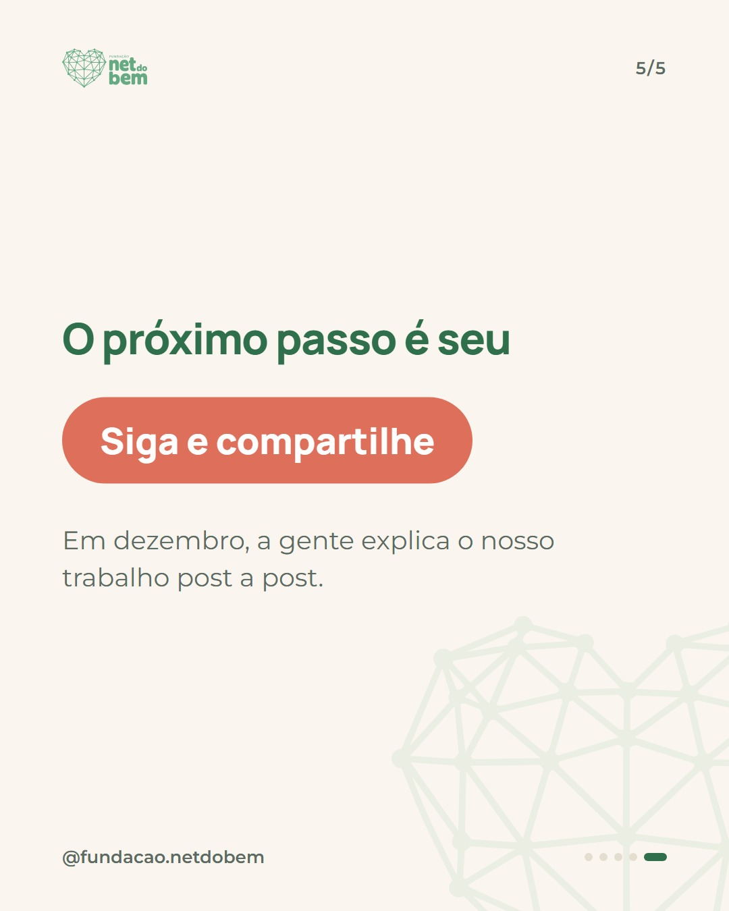
1/5
Rascunho com pendência
Fotos do evento: equipe montando, convidados adultos, fala da Patrícia e da Agda. Nenhuma criança, nenhuma placa ou fachada do local.
Confirmar autorização de imagem dos adultos que aparecem de rosto.
PautaP0.3 · Bastidor
CTA únicoSiga e compartilhe
PúblicoConvidados e comunidade
ObjetivoMostrar pessoas reais e a preparação, com foto de verdade.
Os bastidores da inauguração.
Antes de quinta-feira teve banner chegando da gráfica, apresentação sendo ajustada e muita conversa sobre como contar o que a Net do Bem faz. Nesta galeria estão alguns desses momentos e as pessoas que estiveram com a gente.
Siga e compartilhe.
#FundacaoNetDoBem #Sorocaba #Acolhimento #QuemCuidaDeQuemCuida
Os bastidores da inauguração.
Antes de quinta-feira teve banner chegando da gráfica, apresentação sendo ajustada e muita conversa sobre como contar o que a Fundação Net do Bem faz. Nesta galeria estão alguns desses momentos e as pessoas que estiveram com a gente. Obrigado a cada um.
Siga a página e compartilhe.
Carrossel de fotos da inauguração com faixa verde na parte de baixo. Mostra o banner verde com o logo e a frase Sejam bem-vindos, a equipe e convidados adultos. Não aparecem crianças.
1 ideia · 1 CTA · gancho até 6 palavras · sem criança identificável · sem endereço ou rotina · sem cópia de perfil de referência · sem Imposto de Renda · rosto de adulto só com autorização · legenda revisada por 1 pessoa da fundação.
Post 04 · Domingo, 29/11 · 18h
Quem faz a Net do Bem
Fase 0 · InauguraçãoPronto Carrossel de retratos + Reels do fundador · 5 imagens
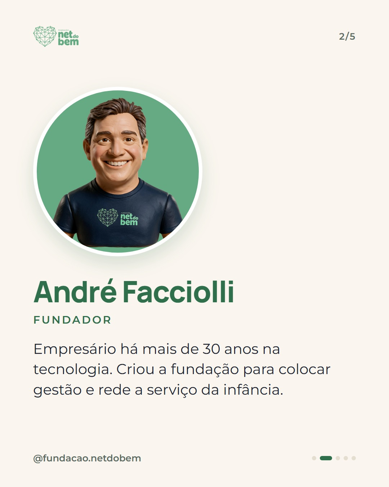
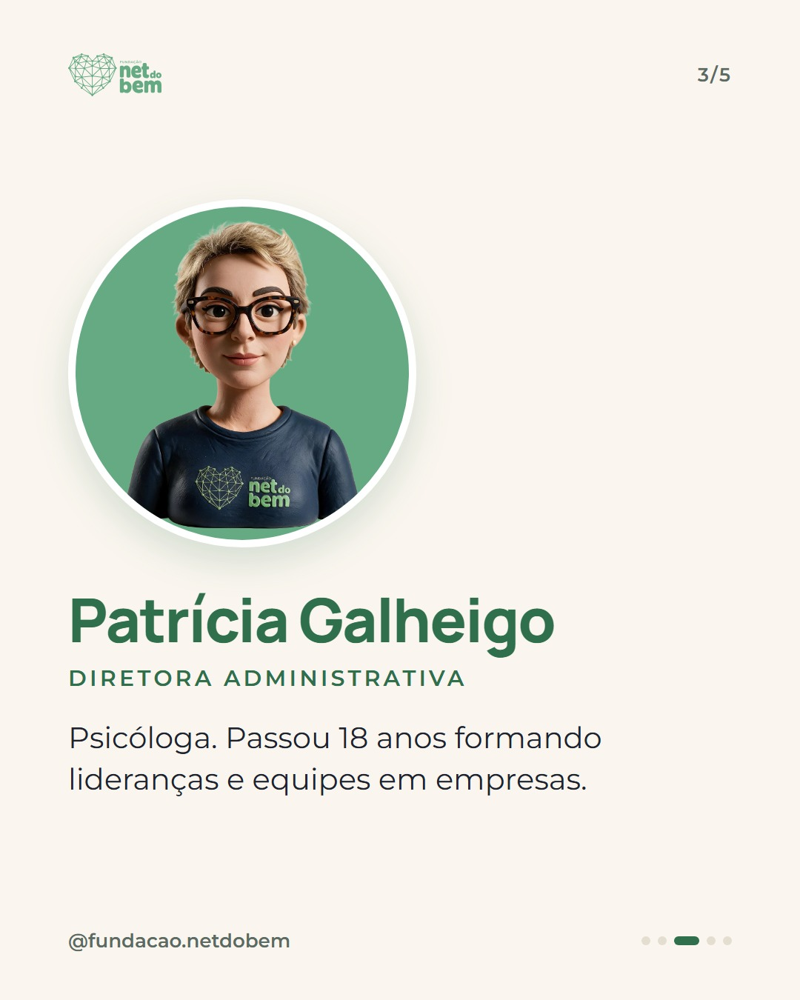
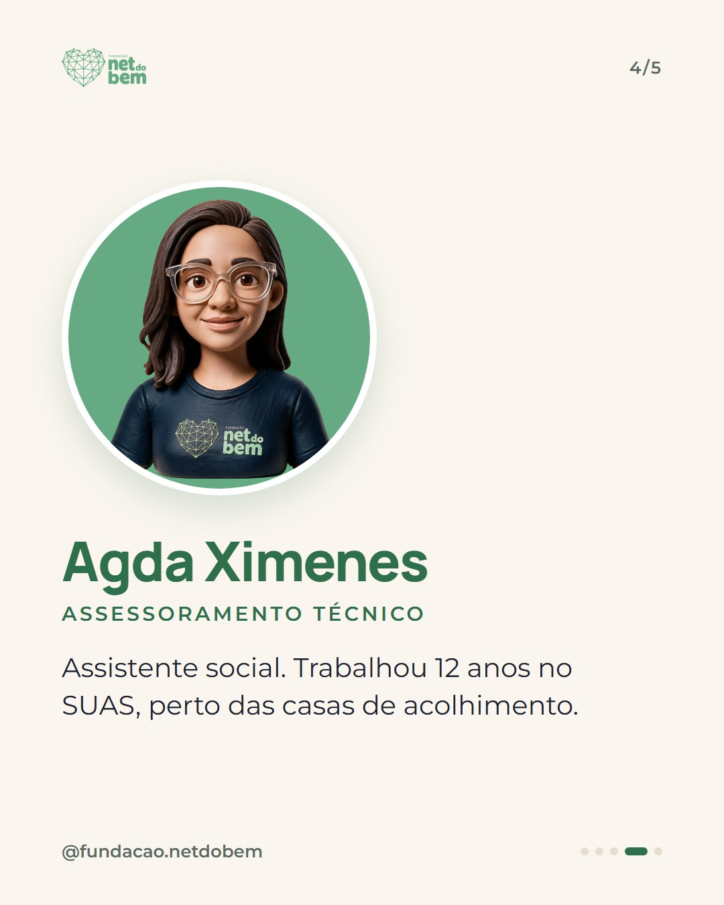
1/5
Observação
Reels do André (30 a 45 s) gravado na inauguração: se existir, publicar o Reels neste dia e guardar o carrossel para 06/12.
Confirmar com Patrícia e Agda os cargos como devem aparecer.
PautaP0.4 · Quem está por trás
CTA únicoSiga e compartilhe
PúblicoTodos os públicos
ObjetivoDar rosto e função às três pessoas que apresentaram a fundação.
Roteiro
0 a 3 s, olhando para a câmera: "Eu sou o André e criei a Fundação Net do Bem."
Por que existimos: "As casas de acolhimento fazem um trabalho enorme e quase sempre sem apoio de gestão. A gente quer mudar isso."
O que pedimos hoje: "Siga o perfil e compartilhe com quem trabalha com acolhimento."
Quem faz a Net do Bem.
O André Facciolli fundou a Net do Bem para colocar a experiência de gestão dele a serviço da infância. A Patrícia Galheigo é psicóloga e passou 18 anos formando lideranças e equipes. A Agda Ximenes é assistente social e trabalhou 12 anos no SUAS, perto das casas de acolhimento.
Siga e compartilhe.
#FundacaoNetDoBem #Sorocaba #Acolhimento #QuemCuidaDeQuemCuida
Quem faz a Fundação Net do Bem.
André Facciolli, fundador, é empresário há mais de 30 anos na área de tecnologia e criou a fundação para colocar essa experiência de gestão a serviço da infância.
Patrícia Galheigo, diretora administrativa, é psicóloga e passou 18 anos formando lideranças e equipes.
Agda Ximenes, do assessoramento técnico, é assistente social e trabalhou 12 anos no SUAS, perto das casas de acolhimento.
Siga a página e compartilhe.
Carrossel com retratos em massinha das três pessoas da fundação: André Facciolli, fundador, de camiseta azul com o logo; Patrícia Galheigo, diretora administrativa; e Agda Ximenes, do assessoramento técnico. Cada slide traz nome, função e uma frase sobre a trajetória.
1 ideia · 1 CTA · gancho até 6 palavras · sem criança identificável · sem endereço ou rotina · sem cópia de perfil de referência · sem Imposto de Renda · rosto de adulto só com autorização · legenda revisada por 1 pessoa da fundação.
Post 05 · Segunda-feira, 30/11 · 18h
Obrigado por estar aqui
Fase 0 · InauguraçãoPronto Arte limpa (versão com foto opcional) · 2 imagens
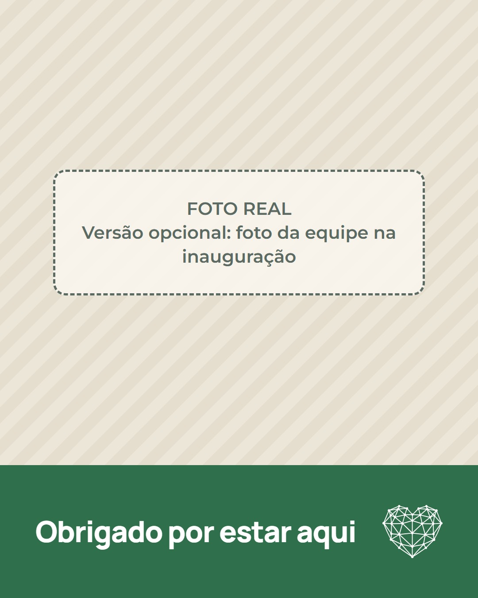
1/2
Observação
Opcional: trocar pela foto da equipe no evento, com a mesma faixa (slide 2).
PautaP0.5 · Obrigado
CTA únicoSiga e compartilhe
PúblicoConvidados e novos seguidores
ObjetivoAgradecer e anunciar o que vem em dezembro.
Obrigado por estar aqui.
Na quinta-feira recebemos convidados na nossa inauguração, em Sorocaba, e muita gente acompanhou por aqui. Em dezembro vamos explicar, post a post, como a Net do Bem apoia as casas de acolhimento e quem cuida nelas.
Siga e compartilhe.
#FundacaoNetDoBem #Sorocaba #Acolhimento #QuemCuidaDeQuemCuida
Obrigado por estar aqui.
Na quinta-feira recebemos convidados na inauguração da Fundação Net do Bem, em Sorocaba. Em dezembro vamos explicar, post a post, como a fundação apoia as casas de acolhimento e as pessoas que cuidam nelas.
Siga a página e compartilhe.
Arte em fundo creme com o coração de linhas e pontos da Fundação Net do Bem e a frase Obrigado por estar aqui.
1 ideia · 1 CTA · gancho até 6 palavras · sem criança identificável · sem endereço ou rotina · sem cópia de perfil de referência · sem Imposto de Renda · rosto de adulto só com autorização · legenda revisada por 1 pessoa da fundação.
Fundação Net do Bem · @fundacao.netdobem · Conteúdo preparado pela Substrato Digital